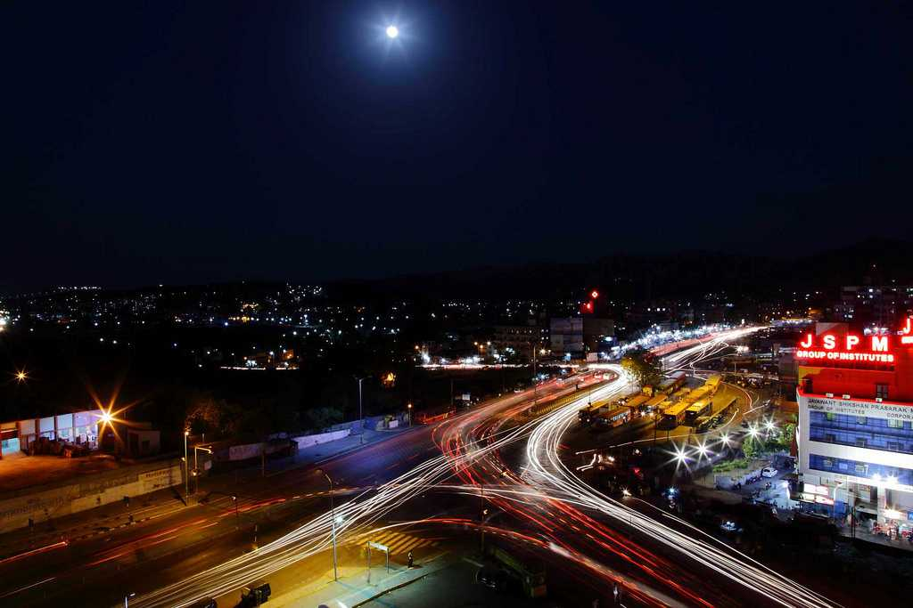
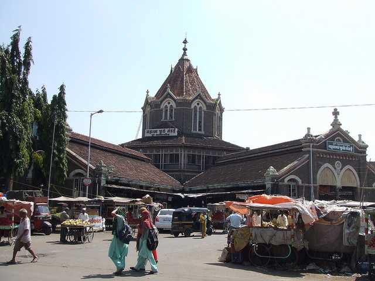
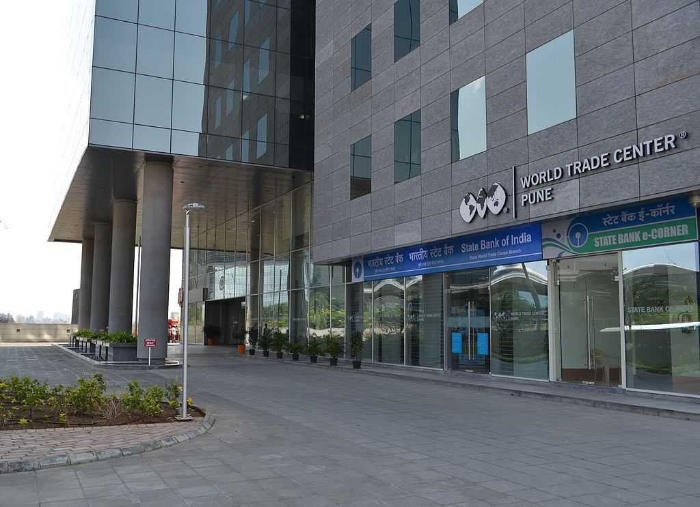

|  |  |  |
"Oxford of the East" Pune Tourism Pune is a bustling metropolis of Maharashtra, ranked number one in India in the ease of living. Often referred to as the Oxford of the East, it is a hub of diverse people and activities and is in rapidly growing into one of the top metropolitan cities in the country. Pune is a city that perfectly blends modernity with tradition sprinkled with colonial-era charm, and it deserves the title of being the cultural capital of Maharashtra. Behind the modern commercialized façade of Pune lies the roots of ancient Poona, which gave birth to the Maratha Empire and had a very crucial role to play in the history of India’s independence. Pune is globally known for the Osho Ashram which attracts followers from all over the world. Dotted with palaces and temples, the most important of these are the Shaniwar Wada palace and the Aga Khan Palace. To experience the grandiose of Maratha architecture coupled with stunning views of the Sahyadris, the Singhagad fort is a must-visit tourist attraction. Due to its alluring location on the Bhuleshwar Range of the Sahyadri Mountains, it offers excellent trekking trails to the top of the cliffs. While Pune has plenty of eating options, ranging from street food to high-class restaurants where one can enjoy all kinds of cuisines, it is renowned for its bakery items. Ranging from a variety of cookies, pastries to even cakes, don’t forget to try out Pune’s mouth-watering desserts.